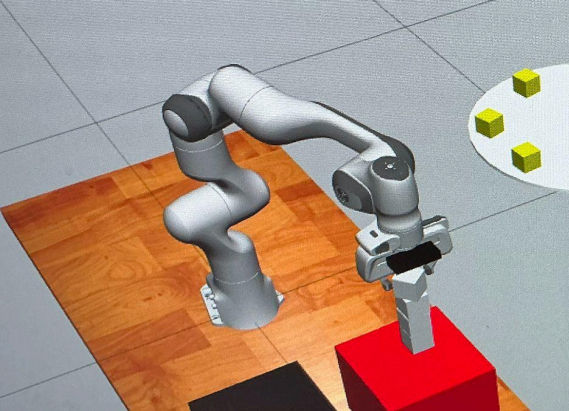
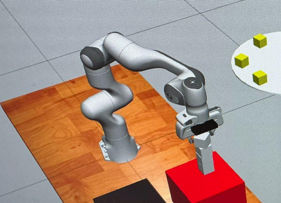

Project Overview
This project explored vision-guided manipulation using the Franka Emika Panda robotic arm. I developed the trajectory planning and kinematics pipeline that generated smooth motions for grasping and stacking, and I integrated AprilTag-based vision to detect and localize the blocks. By combining motion planning with vision feedback, the system successfully stacked seven blocks with over ninety percent accuracy and placed second in a university competition.
 

My Contributions
-
In this project, I was responsible for developing the kinematics and path planning framework for the Franka Emika Panda robot. I implemented trajectory generation and motion control to ensure smooth grasping and stacking, and helped integrate AprilTag-based localization to improve positioning accuracy during both static and dynamic block stacking tasks.
Technologies
Tools: Franka Emika Panda · ROS · Gazebo · Python · AprilTag detection · Inverse kinematics · Trajectory planning
Platform: Ubuntu 20.04 + ROS1
What I Learned
Through this project,I learned how to connect vision feedback with motion planning, how crucial calibration is for grasping accuracy, and how to balance trajectory complexity with reliable real-world execution.